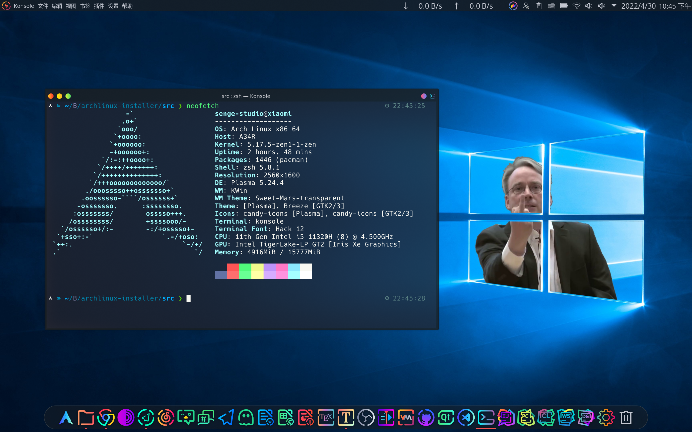

从0开始安装ArchLinux
请关注我的B站和YouTube
注意
- 如果你用的是Manjaro，请参考ManjaroWiki进行配置！
- Manjaro按照该文档进行操作，可能会产生致命的问题，该问题与文档作者无关！
- 如果想要查看其他配置，请参考ArchWiki链接
安装准备阶段
下载arch linux
使用清华源下载arch linux
清华源下载链接
刻录系统镜像
Windows/macOS系统
下载balenaEtcher官方下载链接
Windows也可以使用rufus下载链接
不建议使用UltraISO
Linux系统（包含Linux衍生版本）
下载balenaEtcher官方下载链接
运行lsblk找到你的U盘
运行dd bs=4m if=/dev/sdx of=/path/archlinux.iso刻录Linux系统
注：sdx为你的U盘
/path/archlinux.iso为下载路径，必须为绝对路径，如：
/home/username/Downloads/archlinux-2020.10.01-x86_64.iso
一定不要使用相对路径：
使用其他Linux发行版本安装
使用其他Linux版本打开终端，对ArchLinux进行分区等操作，
然后安装arch-install-scripts
大部分Linux发行版的软件仓库中都有arch安装脚本，安装后可以直接使用pacstrap和arch-chroot命令安装。
同时也可以使用ArchLinux Bootstrap进行安装，可以参考ArchWiki
进入archiso以安装arch linux
连接网络
有线连接
直接用网线连接电脑（没有网线接口且没有安装Wi-Fi驱动的笔记本可以尝试用安卓手机USB网络共享连接电脑），然后运行dhcpcd
检查网络是否连接成功
当你配置好连接以后，你可以运行以下命令来检测网络是否连接成功
ping -c 3 https://mirrors.tuna.tsinghua.edu.cn
你需要运行systemctl status dhcpcd，确保你已经连接网线或已经配置好安卓设备的USB网络共享
无线连接
如果你的电脑支持Wi-Fi，且处于无线局域网的覆盖范围内，这样的话你可以尝试使用无线连接进行安装
安装时要运行iwctl，进入iwd控制台
然后输入device list列出网络设备的名称
如果你的网络设备的名称是wlan0，你可以运行station wlan0 scan来扫描附近的Wi-Fi热点
扫描完成后，运行station wlan0 get-networks
如果你要连接的Wi-Fi 的SSID是mywlan，你需要运行station wlan0 connect mywlan，然后你需要输入密码以连接网络
如果你知道网络设备的名称、Wi-Fi的SSID和Wi-Fi密码，你可以在不运行iwctl的模式下直接运行以下命令来连接Wi-Fi（此处我们假设Wi-Fi SSID是mywifi，密码是mypassword，网络设备名是wlan0）
iwctl --passphrase mypassword station wlan0 connect mywifi
检测网络是否连接成功
当你配置好连接以后，你可以运行以下命令来检测网络是否连接成功
ping -c 3 https://mirrors.tuna.tsinghua.edu.cn
如果你使用的是无线网络
使用ssh远程安装
运行pacman -Syy openssh安装openssh
运行systemctl start sshd启动ssh服务
运行ifconfig查看ip地址
运行passwd设置密码
ssh连接archlinux
# 进入root用户
sudo -i
# ssh连接arch linux
ssh root@192.168.*.*
注意 192.168.*.*是arch Linux的IPv4地址 运行ssh时输入archlinux的密码 然后可以按照archlinux的安装步骤继续安装
设置时区
timedatectl set-ntp true
磁盘分区
运行lsblk查看你的硬盘
机械硬盘一般是/dev/hdx
SATA固态硬盘一般是/dev/sdx
NVME固态硬盘一般是/dev/nvmexn1
fdisk /dev/mydisk
其中mydisk是你的硬盘 fdisk常用命令
| 命令 | 操作 |
|---|---|
| g | 转化为GPT格式，常见于UEFI启动 |
| o | 转化为dos格式，常见于LEGACY启动 |
| m | 帮助 |
| n | 新建分区 |
| d | 删除分区 |
| w | 保存数据 |
| q | 退出但不保存 |
也可以使用cfdisk来配置，但是需要修改磁盘标识
分区格式
| 分区 | 挂载点 | 建议大小 | 格式 |
|---|---|---|---|
| efi | /boot/efi | 300M | vfat |
| boot | /boot | 500M | ext4 |
| 根分区 | / | 20G | ext4 |
| 家目录 | /home | 剩余空间 | xfs |
| 交换分区 | - | 10G | [swap] |
格式化分区
mkfs.vfat /dev/mydisk1格式化efi分区
mkfs.ext4 /dev/mydisk2格式化boot分区
mkfs.ext4 /dev/mydisk3格式化根分区
mkfs.xfs /dev/mydisk4格式化home分区
mkswap /dev/mydisk5设置swap分区
swapon /dev/mydisk5激活swap分区
注意
- 交换分区分区在此处激活，后续无需挂载交换分区
- 如果主板不支持UEFI引导，请忽略boot和efi分区
- xfs不支持缩小分区，谨慎使用
挂载分区
# 挂载根分区
mount /dev/mydisk3 /mnt
# 在根分区下新建boot文件夹
mkdir /mnt/boot
# 挂载boot分区
mount /dev/mydisk2 /mnt/boot
# 在boot目录下新建efi文件夹
mkdir /mnt/boot/efi
# 挂载efi分区
mount /dev/mydisk1 /mnt/boot/efi
# 在根分区下新建home文件夹
mkdir /mnt/home
# 挂载home分区
mount /dev/mydisk4 /mnt/home
注意
- 交换分区分区已提前激活，分区时无需挂载交换分区
btrfs引导
同样是用fdisk或cfdisk来进行磁盘分区，然后进行挂载
| 分区 | 挂载点 | 建议大小 | 格式 |
|---|---|---|---|
| efi | /boot/efi | 300M | vfat |
| 根分区 | / | 剩余空间 | btrfs |
| 交换分区 | - | 10G | [swap] |
挂载btrfs分区
# 挂载btrfs分区
mount /dev/mydisk2 /mnt
# 新建子卷
cd /mnt
# 新建root子卷
btrfs subvol create @
# 新建home子卷
btrfs subvol create @home
# 卸载btrfs分区
cd /
umount /dev/mydisk2
# 挂载root子卷
mount /dev/mydisk2 /mnt -o subvol=@
# 挂载home子卷
mkdir -p /mnt/home
mount /dev/mydisk2 /mnt/home -o subvol=@home
# 挂载EFI分区
mkdir -p /mnt/boot/efi
mount /dev/mydisk1 /mnt/boot/efi
更换软件源
直接切换为中国的软件包
curl -L -o /etc/pacman.d/mirrorlist "https://archlinux.org/mirrorlist/?country=CN"
然后编辑/etc/pacman.d/mirrorlist，反注释其中一个或多个链接。
安装基本系统
pacstrap -i /mnt base base-devel linux linux-firmware vim nano
注意
- base-devel 不是刚需，如果你需要用aur或者是需要使用makepkg安装软件的话建议安装base-devel
- 安装vim和nano是因为需要修改配置文件，然而arch linux不带vim和nano， 需要手动安装。
配置fstab
自动配置fstabgenfstab -U /mnt >> /mnt/etc/fstab
检查fstabcat /mnt/etc/fstab
注意
- 无论主板是否支持UEFI都可以用这个方法安装
切换至新系统
arch-chroot /mnt /bin/bash
系统基本配置
语言设置
配置本地语言vim /etc/locale.gen
在结尾追加或反注释
en_US.UTF-8 UTF-8
zh_CN.UTF-8 UTF-8
locale-gen应用配置
运行echo LANG=en_US.UTF-8 >> /etc/locale.conf
注意
- 不设置中文的原因是因为tty环境下可能会出现中文乱码，安装桌面时会安装中文字体并修改相关内容
时区设置
本地时区配置ln -sf /usr/share/zoneinfo/Asia/Shanghai /etc/localtime
设置硬件时钟hwclock --systohc --utc
配置主机名
编辑/etc/hostname，写入myhostname
其中myhostname代表你的主机名，如果不配置，默认为archlinux 建议配置主机名，不然当你进入KDE Plasma桌面时，可能会出现无法打开GUI应用程序的问题
配置hosts
编辑/etc/hosts，把myhostname改为你自己的主机名
127.0.0.1 localhost
::1 localhost
127.0.1.1 myhostname.localdomain myhostname
引导系统
EFIStub 直接引导ArchLinux（适用于单系统）
efibootmgr -d /dev/sda -p 1 -c -L "Arch Linux" -l /vmlinuz-linux -u "root=/dev/sda2 rw initrd=/initramfs-linux.img"
提示
- 其中的
/dev/sda是系统所使用的磁盘 -p 1中的1代表EFI分区的位置/dev/sda2代表root分区位置
Grub引导
运行pacman -S os-prober，如果使用archlinux单系统或者是不想用arch linux引导其他系统则可以省略此步骤
下载grub安装时所必需的文件pacman -S dosfstools grub efibootmgr
安装grubgrub-install --target=x86_64-efi --efi-directory=/boot/efi --recheck
如果提示no error reported则说明grub安装成功
运行grub-mkconfig -o /boot/grub/grub.cfg更新grub
systemd-boot引导
- 运行
bootctl install
注意
- 请提前设置ESP分区路径，否则可能会安装失败！
- 适用systemd-boot启动archlinux
在/boot/loader/entries目录下添加arch.conf，然后将文件内容改为：
title ArchLinux
linux /vmlinuz-linux
initrd /initramfs-linux.img
options root=/dev/nvme0n1p2 rw quiet rootflags=subvol=@
用户设置
设置主机名vim /etc/hostname
输入主机名，只能输入字母（如果跳过此配置，主机名默认为archlinux）
设置root密码passwd
添加用户useradd -m -g users -G wheel -s /bin/bash username
设置用户密码（可以和root相同）passwd username
为用户添加sudo权限vim /etc/sudoers
反注释%wheel ALL=(ALL) ALL
如果想在输入密码时显示星号，可以追加Defaults env_reset,pwfeedback
注意
usename为用户名
如果没有设置星号，输入密码时不显示密码是正常现象
编辑/etc/sudoers时要用:wq!命令执行，加一个感叹号强制执行
安装网络驱动
wifi
安装wifi驱动pacman -S netctl iw wpa_supplicant dialog iwd
博通网卡请安装这个驱动（常用于MacBook用户或黑苹果用户）pacman -S broadcom-wl
有线连接dhcp、NetworkManager
安装有线网卡驱动pacman -S dhcp dhcpcd netwkrkmanager
chroot环境下无法systemctl启动有线网卡
退出chroot并重启以进入新系统
# 退出chroot
exit
# 重启电脑
reboot
注意
- 运行reboot命令后，请移除安装介质
配置系统
网络配置
Wi-Fi
首先运行sudo systemctl enable --now iwd来启动wifi服务
如果你的电脑支持Wi-Fi，且处于无线局域网的覆盖范围内，这样的话你可以尝试使用无线连接进行安装
安装时要运行iwctl，进入iwd控制台
然后输入device list列出网络设备的名称
如果你的网络设备的名称是wlan0，你可以运行station wlan0 scan来扫描附近的Wi-Fi热点
扫描完成后，运行station wlan0 get-networks
如果你要连接的Wi-Fi 的SSID是mywlan，你需要运行station wlan0 connect mywlan，然后你需要输入密码以连接网络
如果你知道网络设备的名称、Wi-Fi的SSID和Wi-Fi密码，你可以在不运行iwctl的模式下直接运行以下命令来连接Wi-Fi（此处我们假设Wi-Fi SSID是mywifi，密码是mypassword，网络设备名是wlan0）
iwctl --passphrase mypassword station wlan0 connect mywifi
dhcp
有线连接sudo systemctl enable --now dhcpcd
重新检查网络连接ping https://mirrors.tuna.tsinghua.edu.cn
NetworkManager
有线连接sudo systemctl enable --now NetworkManager
重新检查网络连接ping https://mirrors.tuna.tsinghua.edu.cn
安装驱动
显卡驱动
运行lspci | grep VGA查看显卡型号
按照自己的显卡型号安装相应驱动
| 显卡 | 驱动名称 |
|---|---|
| 通用 | xf86-video-vesa |
| Intel | xf86-video-intel |
| AMD | xf86-video-amdgpu |
| NVIDIA | nvidia nvidia-utils cuda nvidia-settings opencl-nvidia |
| 开源MVIDIA(不推荐) | xf86-video-nouveau |
| ati | xf86-video-ati |
| vmware虚拟机 | xf86-video-vmware |
FBI Warning
- 千万不要安装nouveau，千万不要安装nouveau，千万不要安装nouveau！重要的事情说三遍。如果你不怕电脑莫名卡死，当我没说。（doge）
- ps：博主受过nouveau的折磨
触摸板驱动
sudo pacman -S xf86-input-libinput笔记本专用，台式机可以忽略（如果有外置触摸板也可以安装这个驱动）
安装桌面
sudo pacman -S noto-fonts-cjk安装中文字体
将语言改成中文sudo vim /etc/locale.conf
将英语注释掉，添加以下内容LANG=zh_CN.UTF-8
安装x窗口系统sudo pacman -S xorg
Kde桌面
简洁的kde桌面sudo pacman -S plasma-meta plasma-nm konsole dolphin kde-connect firefox
kde全家桶sudo pacman -S plasma plasma-nm kde-applications
安装完成以后sudo systemctl enable sddm启动sddm服务
sudo systemctl enable NetworkManager启动网络管理器
sudo reboot重启
ArchLinux 安装后配置
添加32位支持
编辑/etc/pacman.conf文件，并反注释
[multilib]
Include = /etc/pacman.d/mirrorlist
sudo pacman -Syyu刷新软件源
添加archlinuxcn源
编辑/etc/pacman.conf文件，并在末尾追加以下内容
[archlinuxcn]
SigLevel = TrustAll
Server = https://mirrors.tuna.tsinghua.edu.cn/archlinuxcn/$arch
sudo pacman -S archlinuxcn-keyring安装archlinuxcn密钥环
sudo pacman -Syu刷新软件源
警告
- Manjaro不要使用archlinuxcn
- Manjaro不要使用archlinuxcn
- Manjaro不要使用archlinuxcn
安装aur
有archlinuxcn源
sudo pacman -S yay
无archlinuxcn源
sudo pacman -S git
git clone https://aur.archlinux.org/yay.git
cd yay
makepkg -si
sudo pacman -U yay*.tar.zst
警告
- 非ArchLinux请勿使用aur（尤其是Manjaro）
- EndeavourOS、Garuda Linux可以使用cn源和aur
安装optimus双显卡（需要配置multilib32位支持并安装aur）
安装Intel核显驱动
sudo pacman -S xf86-video-intel mesa lib32-mesa vulkan-intel lib32-vulkan-intel
安装NVIDIA独显驱动
直接安装以下显卡驱动
sudo pacman -S nvidia nvidia-settings nvidia-utils lib32-nvidia-utils opencl-nvidia lib32-opencl-nvidia
Geforce630以下到Geforce400老显卡
yay -S nvidia-390xx-dkms nvidia-390xx-utils lib32-nvidia-390xx-utils
如果是Geforce400以下的显卡，只能安装开源驱动
sudo pacman -S mesa lib32-mesa xf86-video-nouveau
安装OptimusManager
yay -S optimus-manager optimus-manager-qt
警告
- I 卡 N 卡的 modeset 选项都去掉勾选
- 切换到英特尔核显模式前，需要选择 intel，不要选 modesettings 模式。否则会黑屏+混成不能开启
- hybird 模式中添加的三个环境变量，在切换到其他模式之前一定要去掉，否则会黑屏，切换不到 intel。
- 如果你使用了混成器，调整至 OpenGl 2.0 - 平滑模式。否则切换时可能会卡 splash screen
- 本教程仅适用于KDE桌面，其他桌面可能会有Bug
- 暂时不支持AMD显卡，驱动作者正在开发中，预计很快就能支持
本部分教程来自ArchLinux双显卡教程
安装中文输入法
新安装的ArchLinux系统不带中文输入法，直接安装
sudo pacman -S fcitx5-chinese-addons fcitx5-git fcitx5-gtk fcitx5-qt fcitx5-pinyin-zhwiki kcm-fcitx5
编辑~/.pam_environment并写入以下内容
GTK_IM_MODULE DEFAULT=fcitx
QT_IM_MODULE DEFAULT=fcitx
XMODIFIERS DEFAULT=@im=fcitx
设置开机默认启动fcitx5，编辑~/.xprofile并在文件中写入fcitx5 &
重启电脑，则可以输入中文
安装常用软件
软件包
| 软件名 | 包名 |
|---|---|
| 网易云音乐 | yesplaymusic(aur) |
| wps-office(aur) | |
| wps-office-mui-zh(aur) | |
| 火狐 | firefox |
| VS Code | visual-studio-code-bin |
| 谷歌浏览器 | google-chrome |
| OBS Studio | obs-studio |
| 火焰截图 | flameshot |
| AUR | yaourt yay（archlinuxcn） |
| anaconda | anaconda(archlinuxcn) |
| 多线程下载（命令行） | axel |
| icalingua | |
| 微信 | wechat-uos |
| Telegram | telegram-desktop |
警告
- 非ArchLinux请勿使用archlinuxcn和aur（尤其是Manjaro）
- 非ArchLinux请勿使用archlinuxcn和aur（尤其是Manjaro）
- 非ArchLinux请勿使用archlinuxcn和aur（尤其是Manjaro）
安装blackarch工具包（可选）
编辑/etc/pacman.conf添加blackarch软件源并追加以下内容
[blackarch]
SigLevel = Never
Server = https://mirrors.tuna.tsinghua.edu.cn/blackarch/$repo/os/$arch
安装blackarch密钥环sudo pacman -S blackarch-keyring
更改blackarch软件源sudo vim /etc/pacman.conf
把刚才的blackarch软件源中的Never改为TrustAll
sudo pacman -Syyu刷新软件源
安装渗透工具sudo pacman -S blackarch
警告：
- 非ArchLinux不要安装blackarch（尤其是Manjaro），不然容易滚挂！
- Arch原生一定要按照以上步骤操作，不然会提示密钥环问题。
美化效果图
此教程适用于基于ArchLinux的 KDE Plasma桌面的Linux发行版本，例如：Manjaro、EndeavourOS、Garuda Linux、Artix Linux等

调整面板
删除自带面板，新建空面板，从左往右依次是：
应用程序菜单->全局菜单->面板间距->系统托盘->数字时钟
可根据实际情况添加其他部件
安装主题
直接下载全局主题，依次点击
系统设置->全局主题->获取新的主题（如果无法下载，可以分别在Plasma样式、颜色、应用程序风格等自己选择主题进行下载，也可以下载SDDM桌面、欢迎界面、图标和鼠标指针）
系统设置->应用程序风格->窗口装饰->标题栏按钮（自己调整窗口标题栏，可以把按键放到左边）
系统设置->工作空间行为->桌面特效->糖果->选择三个特效->应用
系统设置->工作空间行为->桌面特效->外观->魔灯
系统设置->工作空间行为->桌面特效->焦点->滑出
系统设置->工作空间行为->桌面特效->窗口管理->桌面立方(目前桌面立方可能已被移除)
系统设置->窗口管理->任务切换器->把微风改为翻转切换
设置Kvantum主题
首先安装sudo pacman -S kvantum，然后手动添加kvantum主题文件夹以完成安装。
安装Latte-Dock
关闭背景大小
绝对大小48(2k屏幕可设置绝对大小为64)
鼠标悬停放大40%
删除模拟时钟
在dock上添加部件
左侧为应用程序面板
目前可以添加窗口边缘距离，建议设置为5-10px，类似于deepin v20或macOS BigSur，有一种悬浮的效果
右侧为回收站
sudo pacman -S latte-dock
此时Latte-Dock可以正常使用
安装小部件(可选)
右键点击桌面空白部分->点击添加部件->搜索 Simple System Monitor -> 点击安装
安装后点击配置，Background Color选择Cristal，如果没有交换分区，可以自行关闭

安装panon(可选)
直接添加并下载小部件panon，然后运行命令
sudo pacman -S qt5-websockets python-docopt python-numpy python-pillow python-pyaudio python-cffi python-websockets
KDE使用i3wm窗口管理器
2022年5月12日更新
视频链接
安装脚本
- 安装
sh -c "$(curl -fsSL https://gitee.com/senge-studio/archlinux_plasma_i3wm/raw/master/install.sh)"
- 卸载
sh -c "$(curl -fsSL https://gitee.com/senge-studio/archlinux_plasma_i3wm/raw/master/uninstall.sh)"
注意
- 请勿使用root身份执行此脚本，不然会在root目录下安装此配置文件。
疑难解答
- 安装完成以后我想修改壁纸怎么办
- 新建文件夹
$HOME/.config/wallpapers，并将壁纸放在该目录下，然后修改壁纸名为i3wallpaper.png- 手动修改配置文件第113行，将壁纸的链接粘贴到配置文件
- 如果我想切换窗口管理器为kwin但是不想删除i3配置怎么办？
- 新版本的配置文件已经支持一键切换窗口管理器，只需运行
i3-switch即可
- 配置文件有什么bug
- 在i3模式下，全局菜单、window-buttons无法使用，无法添加小部件
- 在i3模式下，所有kwin脚本都会失效（这不算Bug，切换wm为i3的目的是禁用i3wm）
如何使用
- 常用快捷键
mod键为Meta键、Super键或Win键，对应macOS的command键。
| 快捷键 | 功能 |
|---|---|
mod+shift+q | 关闭当前窗口 |
mod+Return | 打开Konsole |
mod+d | 打开Krunner |
mod+f | 切换全屏模式 |
mod+Shift+Space | 切换当前窗口为浮动、平铺 |
mod+num_x | 切换虚拟桌面/工作空间 |
mod+Shift+num_x | 将当前窗口移动到桌面/工作空间 |
mod+Shift+c | 重新加载配置文件 |
mod+Shift+r | 重启i3 |
mod+Shift+e | 退出登录 |
mod+r | 进入窗口大小编辑模式 |
mod+Shift+g | 调整窗口间距 |
Return/Esc | 退出编辑/窗口间距模式 |
mod+letter | 打开某个应用（请自行编辑配置文件） |
- 当你下载以后，请手动编辑
$HOME/.config/i3/config文件，然后按照自己的喜好来修改配置文件。
安装zsh
安装软件包zsh
运行chsh -s /bin/zsh配置zsh
如果想换回bash，运行chsh -s /bin/bash
安装oh-my-zsh
执行以下命令前请确保你已安装git
GitHub在国内部分地区访问速度较慢，有时需要使用科学上网才能访问
在~/.zshrc中追加以下内容，然后重启终端
export https_proxy=http://127.0.0.1:7890
export http_proxy=http://127.0.0.1:7890
export all_proxy=http://127.0.0.1:7890
注意
7890为代理服务器端口号，不同代理软件端口号不同本文不会提供任何机场，也不会教大家如何配置代理服务器
如果你没有任何科学上网手段，也不想使用代理，请在gitee手动搜索对应的git仓库，但是这样的话会相对来说较为繁琐。
配置好代理以后，使用终端运行
sh -c "$(curl -fsSL https://raw.githubusercontent.com/robbyrussell/oh-my-zsh/master/tools/install.sh)"
注意：不要以root用户身份执行，除非你只想使用root账户 如果没有git，运行
sudo pacman -S git安装
安装PowerLevel10k主题
运行sudo pacman -S nerd-fonts-complete安装字体
运行以下命令安装powerlevel10k主题
git clone --depth=1 https://github.com/romkatv/powerlevel10k.git ${ZSH_CUSTOM:-$HOME/.oh-my-zsh/custom}/themes/powerlevel10k
配置powerlevel10k
在~/.zshrc写入ZSH_THEME="powerlevel10k/powerlevel10k"
安装后重新打开终端，并更改终端字体为hack（需要安装nerd-fonts，可以在cn源中安装nerd-fonts-complete，这会安装所有的nerd-fonts字体）

如需重新配置powerlevel10k主题，可随时运行p10k configure
安装自动补全插件
git clone git://github.com/zsh-users/zsh-autosuggestions $ZSH_CUSTOM/plugins/zsh-autosuggestions
添加plugins=(zsh-autosuggestions git)
安装语法高亮插件
运行以下命令
git clone https://github.com/zsh-users/zsh-syntax-highlighting.git $ZSH_CUSTOM/plugins/zsh-syntax-highlighting
配置插件
echo "source $ZSH_CUSTOM/plugins/zsh-syntax-highlighting/zsh-syntax-highlighting.zsh" >> ${ZDOTDIR:-$HOME}/.zshrc
安装colorls插件
安装Ruby Gem，软件包名为ruby
运行gem install colorls，用gem安装colorls(确保已安装nerd-fonts字体，不然会乱码)
如果安装速度慢，可以点击这里切换为清华源
安装成功以后将下面几行内容写入~/.zshrc
alias ls=colorls
alias ll="colorls -l"
alias la="colorls -a"
运行source ~/.zshrc使配置立即生效
sudo输入密码显示星号(可选)
编辑/etc/sudoers，为了安全，建议运行visudo命令，然后添加以下内容
Defaults env_reset,pwfeedback
注意
如果没有安装vi，可以创建软链接或更改默认编辑器，然后就可以使用vim、nano等编辑器来编辑sudoers文件
- 运行visudo需要使用root权限